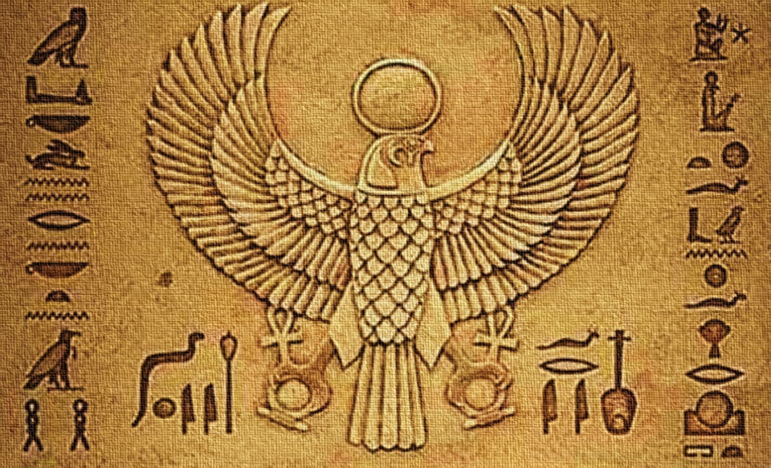

حسب الأسطورة المصرية فإن الشر بدأ في الظهور على الأرض بغيرة ست من أخيه أوزوريس وخاصة بعد إعلان الأخير ملكًا على مصر. فأوزيريس قـُتل بيد أخيه ست رمز الشر. تقص الأسطورة أن ست قام بعمل احتفالية عرض فيها تابوتا رائعا وقال أنه سيكون هدية لمن يأتي على مقاسه. قام الحاضرون بالاستلقاء فيه لكنه لم يكن مناسبا إلا لأوزيريس. وعندما استلقى فيه أوزيريس أغلق ست عليه التابوت وألقاه في النيل. لكن إيزيس زوجته وجدت التابوت وحاولت إنقاذه. فعلم ست بذلك وقام بتمزيق جسد أوزيريس وتفريق أشلائه على جميع مقاطعات مصر. لكن إيزيس بمساعدة أختها نفتيس استطاعتا تجميع أشلاء أوزوريس
أسطورة خلق البشر والقمر :
فقد الإله رع إحدى عينيه فأرسل ولديه شو وتفنوت للبحث عنها ولما طال غيابهما اتخذ لنفسه واحدة أخرى لكن العين الغائبة تعود لتجد ما حدث من تغيير فتذرف الدموع رموت من شدة الغيظ فينتج عنها البشر رمث ولكن رع يقوم بترضية عينه تلك بتسليمها إلى الإله تحوت الإله الكاتب ليرفعها للسماء لتضيء الليل ليكن بذلك مولد القمر لكن عندما فقد حورس عينه اليسرى في حربه مع عمه ست منحه تحوت تلك العين
أسطورة دمار البشر :
تعبر عن الخطيئة التي ارتكبها البشر ضد الإله رع . ولقد حدث ذلك في زمن كان البشر والآلهة فيه شيئا واحدا يتعايشون معا على ألأرض وعندما بلغ الإله رع من السن عتيا بدأ البشر في تجديفهم وتآمرهم ضده لكنه أدرك أفكارهم ودعا الآلهة لكي يسألها المشورة فيما ينبغي عليه فعله مع هؤلاء الخطاة فاقترحت عليه الآلهة أن يرسل عينه التي هي الشمس متقمصة مظهر المعبودة حتحور لكي تسحق المتآمرين . وبالفعل استعرضت هذه الآلهة قوتها ضدهم مما أكسبها لقب سخمت أي القوية ثم عادت وهي مصممة على الذهاب إليهم كرة أخرى واستئصالهم تماما
أسطورة قرص الشمس المجنح :
هو الشكل الذي ظهر فيه حورس البحدتي أو الإدفوي خاصة فوق صروح المعابد في العصور المصرية المتأخرة فيحلق في السماء في شكل قرص شمس مجنح وطوال المعارك التي اشتعلت لم يرد ذكر بشر فكل المشاركين فيها هم إما آلهة أو جان وعلى الرغم من ذلك فإن هناك من يرى أن لهذه الأسطورة أصولا تاريخية الأمر الذي يبدو معقولا وإن هناك من يرى أن لهذه الأسطورة أصولا تاريخية الأمر الذي يبدو معقولا وإن انقسمت الآراء حول تأريخ ومدى قوة تأثير هذه الأحداث التاريخية فبعض الدارسين يرجعونها إلى الصراع بين عباد ست وحورس الذي أخذ مكانه بالفعل في عهد الملك بر إيب سن في الأسرة الثانية بينما يرى آخرون منهم في هذه الأسطورة إشارة إلى أحداث الثورة المصرية التي نشبت ضد الإحتلال الفارسي في العقود القليلة السابقة مباشرة على عصر الإسكندر الأكبر .

أسطورة البعث والحساب :
كان البعث والحساب عند المصريين القدماء يمثل بميزان يوضع قلب الميت في كفة وتوضع ريشة من الإلهة ماعت في الكفة الأخرى أما تتكون المحكمة من 42 قاضي بعدد أقاليم مصر. فإذا رجحت كفة قلبه يدخل الفردوس في وجهة نظرهم وذا رجحت كفة الريشة يدخل الجحيم. وقد صوّر الجحيم على هيئة حيوان مفترس
أسطورة خلق الكون :
في البدء نون أو الخواء كما يترجمه البعض وهو كتلة لم تتشكل بعد وبداخله بذور الحياة الكامنة تولد من الإله نون الشمس أي الإله رع بطريقة مجهولة فيعلن الأخير نفسه حاكم للكون لكن الإله نون لا يتوقف دوره عند هذا الحد وبعد تولي الإله رع حكم الكون يرسل أشعته الذهبية إلى الأرض لتبدأ الأمواج التي تغطيها في الانحسار وتنزل الأشعة على أول تل من الرمال يظهر على سطح الأرض وكانت تلك الأشعة تحمل المادة الإلهية للإله رع التي اتحدت جنسيا مع نفسها لتنجب الجيل الثاني من الآلهة.